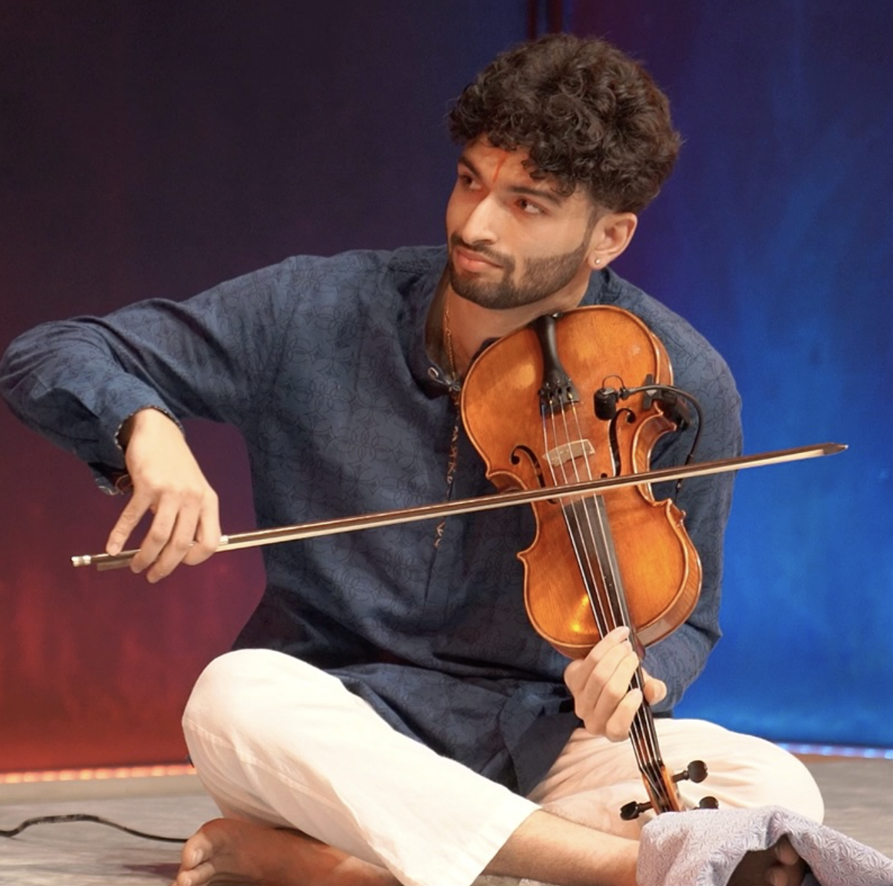

Carnatic Music
Carnatic violinist and accompanist to frontline artists across India and the US. Disciple of Sangeet Samrat Chitravina N Ravikiran.
Bio & Training

Disciple of Sangeet Samrat Chitravina N Ravikiran since 2012, trained initially under his mother Vanitha Suresh and Violinist Shri C N Srinivasa Murthy.
Since his maiden concert as a soloist and accompanist to Shri Sikkil Gurucharan in July 2017, Sanjay has graduated into a sought-after accompanist, supporting frontline artists including Smt Alamelu Mani, Shri Chitravina N Ravikiran, Shri Raghavachary Dharuri, Dr. Rama Ravi, Dr. S Sowmya, Carnatica Brothers, Dr Gayathri Girish, Shri Palghat Ramprasad, Shri Sikkil Gurucharan, Akkarai Sisters, and Shri KS Vishnudev in major festivals and venues in India & the US, sharing the stage with legends such as Shri V V Subrahmanyam, Shri Trichy Sankaran, Shri Srimushnam Raja Rao, Shri Tiruvarur Bhakthavatsalam & Shri Patri Sathish Kumar.
He has also presented solos and duos with his brother Arjun Suresh (Chitravina), as well as orchestral Melharmony concerts with his guru Ravikiran (whom he has also assisted in arranging some of the pieces).
Concerts
Upcoming
2025/26 Chennai Music Season
2026 US Tour
Media
A selection of performances and recordings.
Naturosynth
I collaborated on a song with Naturosynth (a one-off, not a member of the band).
Booking & Contact
For concert bookings and collaborations, reach out by Email →